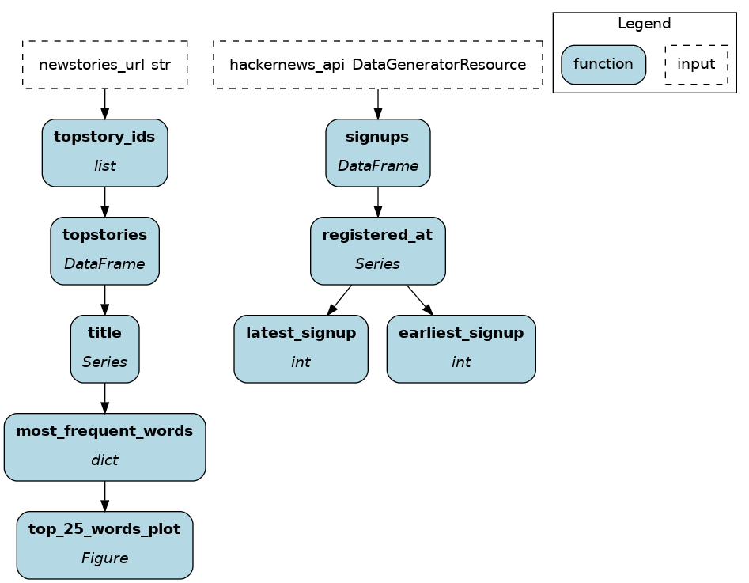
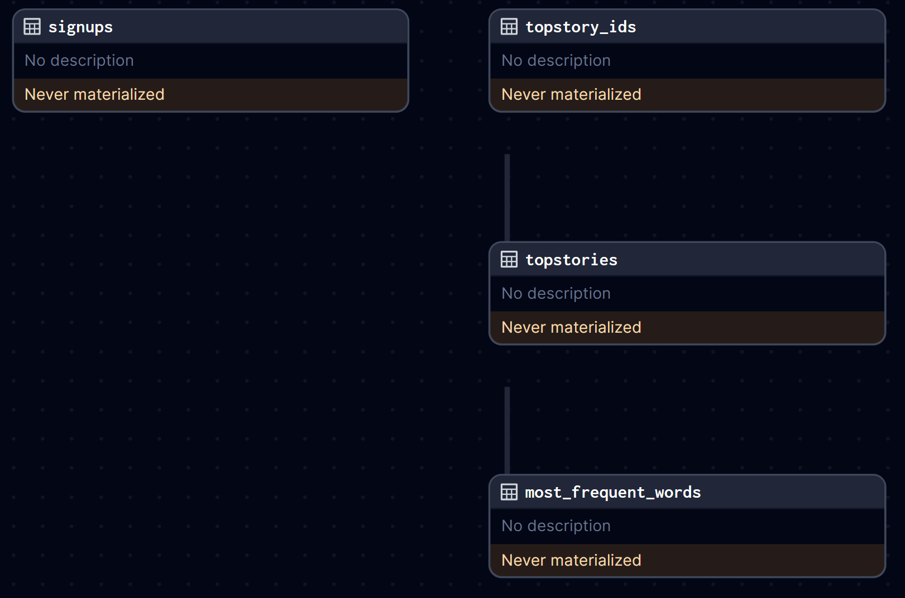

Dagster¶
Here are some code snippets to compare the macro orchestrator Dagster to the micro orchestrator Apache Hamilton. Apache Hamilton can run inside Dagster, but you wouldn’t run Dagster inside Apache Hamilton.
While the two have different scope, there’s a lot of overlap between the two both in terms of functionality and API. Indeed, Dagster’s software-defined assets introduced in 2022 matches Apache Hamilton’s declarative approach and should feel familiar to users of either.
TL;DR¶
Trait |
Apache Hamilton |
Dagster |
|---|---|---|
Declarative API |
✅ |
✅ |
Dependencies |
Lightweight library with minimal dependencies ( |
Heavier framework/system with several dependencies ( |
Macro orchestration |
DIY or in tandem with Dagster, Airflow, Prefect, Metaflow, etc. |
Includes: manual, schedules, sensors, conditional execution |
Micro orchestration (i.e., |
Can run anywhere (locally, notebook, macro orchestrator, FastAPI, Streamlit, pyodide, etc.) |
❌ |
Code structure |
Since it’s micro, there are no restrictions. |
Since it’s macro, a certain code structure is required to properly package code. The prevalent use of relative imports in the tutorial reduces code reusability. |
LLM applications |
Well-suited for LLM applications since it’s a micro orchestration framework. |
❌ |
Lineage |
Fine-grained / column-level lineage. Includes utilities to explore lineage. |
Coarser operations to reduce orchestration and I/O overhead. |
Visualization |
View the dataflow and produce visual artifacts. Configurable and supports extensive custom styling. |
Export Daster UI in |
Run tracking |
DAGWorks (premium) |
Dagster UI |
Experiment Managers |
Has an experiment manager plugin |
❌ |
Materializers |
||
Data validation |
Asset checks (experimental), pandera integration |
|
Versioning operations |
Nodes and dataflow versions are derived from code. |
Asset code version is specified manually. |
Versioning data |
Automated code version + data value are used to read from cache or compute new results with DiskCacheAdapter |
Manual asset code version + upstream changes are used to trigger re-materialization |
In-memory Execution |
Default |
|
Task-based Execution |
Default |
|
Dynamic branching |
||
Hooks |
Lifecycle hooks (easier to extend) |
|
Plugins |
Spark, Dask, Ray, Datadog, polars, pandera, and more (Apache Hamilton is less restrictive and easier to extend) |
Spark, Dask, polars, pandera, Databricks, Snowflake, Great Expections, and more (Dagster integrations are more involved to develop) |
Interactive Development |
❌ |
Dataflow definition¶
Apache Hamilton |
Dagster |
|---|---|
from hamilton.function_modifiers import extract_columns
NEWSTORIES_URL = "https://hacker-news.firebaseio.com/v0/topstories.json"
def topstory_ids(newstories_url: str = NEWSTORIES_URL) -> list[int]:
"""Query the id of the top HackerNews stories"""
return requests.get(newstories_url).json()[:100]
@extract_columns("title")
def topstories(topstory_ids: list[int]) -> pd.DataFrame:
"""Query the top HackerNews stories based on ids"""
results = []
for item_id in topstory_ids:
item = requests.get(
f"https://hacker-news.firebaseio.com/v0/item/{item_id}.json"
).json()
results.append(item)
return pd.DataFrame(results)
def most_frequent_words(title: pd.Series) -> dict[str, int]:
"""Compute word frequency in HackerNews story titles"""
STOPWORDS = ["a", "the", "an", "of", "to", "in",
"for", "and", "with", "on", "is", "\u2013"]
word_counts = {}
for raw_title in title:
for word in raw_title.lower().split():
word = word.strip(".,-!?:;()[]'\"-")
if len(word) == 0:
continue
if word in STOPWORDS:
continue
word_counts[word] = word_counts.get(word, 0) + 1
return word_counts
def top_25_words_plot(most_frequent_words: dict[str, int]) -> Figure:
"""Bar plot of the frequency of the top 25 words in HackerNews titles"""
top_words = {
pair[0]: pair[1]
for pair in sorted(
most_frequent_words.items(), key=lambda x: x[1], reverse=True
)[:25]
}
fig = plt.figure(figsize=(10, 6))
plt.bar(list(top_words.keys()), list(top_words.values()))
plt.xticks(rotation=45, ha="right")
plt.title("Top 25 Words in Hacker News Titles")
plt.tight_layout()
return fig
@extract_columns("registered_at")
def signups(hackernews_api: DataGeneratorResource) -> pd.DataFrame:
"""Query HackerNews signups using a mock API endpoint"""
return pd.DataFrame(hackernews_api.get_signups())
def earliest_signup(registered_at: pd.Series) -> int:
"""Earliest signup on HackerNews"""
return registered_at.min()
def latest_signup(registered_at: pd.Series) -> int:
"""Latest signup on HackerNews"""
return registered_at.min()
|
from dagster import AssetExecutionContext, MetadataValue, asset, MaterializeResult
@asset
def topstory_ids() -> None:
newstories_url = "https://hacker-news.firebaseio.com/v0/topstories.json"
top_new_story_ids = requests.get(newstories_url).json()[:100]
os.makedirs("data", exist_ok=True)
with open("data/topstory_ids.json", "w") as f:
json.dump(top_new_story_ids, f)
@asset(deps=[topstory_ids])
def topstories(context: AssetExecutionContext) -> MaterializeResult:
with open("data/topstory_ids.json", "r") as f:
topstory_ids = json.load(f)
results = []
for item_id in topstory_ids:
item = requests.get(
f"https://hacker-news.firebaseio.com/v0/item/{item_id}.json"
).json()
results.append(item)
if len(results) % 20 == 0:
context.log.info(f"Got {len(results)} items so far.")
df = pd.DataFrame(results)
df.to_csv("data/topstories.csv")
return MaterializeResult(
metadata={
"num_records": len(df),
"preview": MetadataValue.md(df.head().to_markdown()),
}
)
@asset(deps=[topstories])
def most_frequent_words() -> MaterializeResult:
stopwords = ["a", "the", "an", "of", "to", "in",
"for", "and", "with", "on", "is"]
topstories = pd.read_csv("data/topstories.csv")
word_counts = {}
for raw_title in topstories["title"]:
title = raw_title.lower()
for word in title.split():
word = word.strip(".,-!?:;()[]'\"-")
if cleaned_word in stopwords or len(cleaned_word) < 0:
continue
word_counts[cleaned_word] = word_counts.get(word, 0) + 1
top_words = {
pair[0]: pair[1]
for pair in sorted(
word_counts.items(), key=lambda x: x[1], reverse=True
)[:25]
}
plt.figure(figsize=(10, 6))
plt.bar(list(top_words.keys()), list(top_words.values()))
plt.xticks(rotation=45, ha="right")
plt.title("Top 25 Words in Hacker News Titles")
plt.tight_layout()
buffer = BytesIO()
plt.savefig(buffer, format="png")
image_data = base64.b64encode(buffer.getvalue())
md_content = f"})"
with open("data/most_frequent_words.json", "w") as f:
json.dump(top_words, f)
return MaterializeResult(
metadata={"plot": MetadataValue.md(md_content)}
)
@asset
def signups(hackernews_api: DataGeneratorResource) -> MaterializeResult:
signups = pd.DataFrame(hackernews_api.get_signups())
signups.to_csv("data/signups.csv")
return MaterializeResult(
metadata={
"Record Count": len(signups),
"Preview": MetadataValue.md(signups.head().to_markdown()),
"Earliest Signup": signups["registered_at"].min(),
"Latest Signup": signups["registered_at"].max(),
}
)
|
|  |  |
Trait |
Apache Hamilton |
Dagster |
|---|---|---|
Define operations |
Uses the native Python function signature. The dataflow is assembled based on function/parameter names and type annotations. |
Uses the |
Data I/O |
Loading/Saving is decoupled from the dataflow definition. The code becomes more portable and facilitates moving from dev to prod. |
Each asset code operations is coupled with I/O. Hard-coding this behavior reduces maintainability. |
Lineage |
Favors granular operations and fine-grained lineage. For example, |
Favors chunking dataflow into meaningful assets to reduce the orchestration and I/O overhead per operation. Finer lineage is complex to achieve and requires using |
Documentation |
Uses the native Python docstrings. Further metadata can be added using the |
Uses |
Dataflow execution¶
Apache Hamilton |
Dagster |
|---|---|
import os
from hamilton import driver
from hamilton.io.materialization import to
from hamilton.plugins import matplotlib_extensions
import dataflow # import module with dataflow definition
from mock_api import DataGeneratorResource
def main():
dr = (
driver.Builder()
.with_modules(dataflow) # pass the module
.build()
)
# load environment variable
num_days = os.environ.get("HACKERNEWS_NUM_DAYS_WINDOW")
inputs = dict( # mock an API connection
hackernews_api=DataGeneratorResource(num_days=num_days),
)
# define I/O operations; decoupled from dataflow def
materializers = [
to.json( # JSON file type
id="most_frequent_words.json",
dependencies=["most_frequent_words"],
path="data/most_frequent_words.json",
),
to.csv( # CSV file type
id="topstories.csv",
dependencies=["topstories"],
path="data/topstories.csv",
),
to.csv(
id="signups.csv",
dependencies=["signups"],
path="data/signups.csv",
),
to.plt( # Use matplotlib.pyplot to render
id="top_25_words_plot.plt",
dependencies=["top_25_words_plot"],
path="data/top_25_words_plot.png",
),
]
# visualize materialization plan without executing code
dr.visualize_materialization(
*materializers,
inputs=inputs,
output_file_path="dataflow.png"
)
# pass I/O operations and inputs to materialize dataflow
dr.materialize(*materializers, inputs=inputs)
if __name__ == "__main__":
main()
|
from dagster import (
AssetSelection,
Definitions,
define_asset_job,
load_assets_from_modules,
EnvVar,
)
from . import assets
from .resources import DataGeneratorResource
# load assets from passed modules
all_assets = load_assets_from_modules([assets])
# select assets to include in the job
hackernews_job = define_asset_job("hackernews_job", selection=AssetSelection.all())
# load environment variable
num_days = EnvVar.int("HACKERNEWS_NUM_DAYS_WINDOW")
defs = Definitions(
assets=all_assets,
jobs=[hackernews_job],
resources={ # register mock API connection
"hackernews_api": DataGeneratorResource(num_days=num_days),
},
)
|
Trait |
Apache Hamilton |
Dagster |
|---|---|---|
Execution instructions |
Define a |
Load assets from Python modules using |
Execution plane |
|
The asset job is executed by the orchestrator, either through Dagster UI, by a scheduler/sensor/trigger, or via the CLI. |
Data I/O |
I/O is decoupled from dataflow definition. People responsible for deployment can manage data sources without refactoring the dataflow. (Data I/O can be coupled if wanted.) |
Data I/O is coupled with data assets which simplifies the execution code at the code of reusability. |
Framework code |
Leverages a maximum of standard Python mechanisms (imports, env variables, etc.). |
Most constructs requires Dagster-specific code to leverage protobuf serialization. |
More information¶
For a full side-by-side example of Dagster and Apache Hamilton, visit this GitHub repository
For more questions, join our Slack Channel!